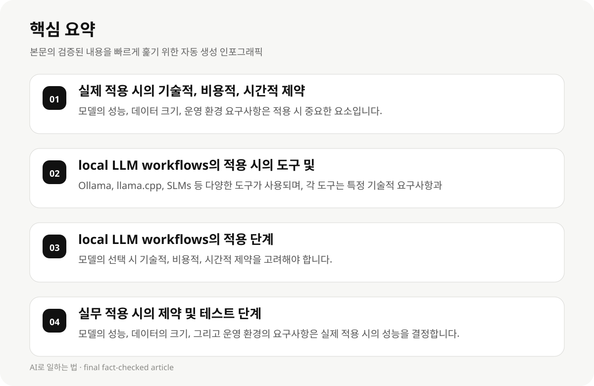

실제 적용 시의 기술적, 비용적, 시간적 제약 #
local LLM workflows를 실제 업무에 적용할 때는 기술적, 비용적, 시간적 제약을 고려해야 합니다. 예를 들어, 모델의 성능, 데이터의 크기, 그리고 운영 환경의 요구사항은 모두 영향을 미칩니다.
기술적으로는 모델의 구조, 훈련 데이터의 양, 그리고 실행 환경의 요구사항이 중요합니다. 비용적으로는 모델의 구매, 훈련, 운영 비용이 발생하며, 시간적으로는 모델의 훈련, 테스트, 그리고 배포 과정이 소요됩니다.
개발자들이 선택할 때는 이러한 제약을 고려하여, 적절한 도구와 프로세스를 선택해야 합니다.
- 모델의 성능, 데이터 크기, 운영 환경 요구사항은 적용 시 중요한 요소입니다.
- 기술적 지식과 도구의 부재는 적용 시의 복잡도를 증가시킬 수 있습니다.
- 시간적 제약은 모델의 훈련과 테스트 과정의 효율성을 좌우할 수 있습니다.
local LLM workflows의 적용 시의 도구 및 프로세스 #
local LLM workflows는 개발자들이 자체적으로 모델을 실행하고 테스트하는 데 필요한 기술적 지식과 도구를 제공합니다. 예를 들어, Ollama, llama.cpp, SLMs 등 다양한 도구가 사용되며, 각 도구는 특정 기술적 요구사항과 비용, 시간을 요구합니다.
도구 선택 시, 모델의 성능, 데이터의 크기, 그리고 운영 환경의 요구사항을 고려해야 합니다. 예를 들어, Ollama는 빠른 실행 속도와 간단한 설정을 제공하지만, 훈련 데이터의 크기와 모델의 성능은 다른 도구와 비교하여 다릅니다.
개발자들이 도구를 선택할 때는 모델의 성능, 데이터의 크기, 그리고 운영 환경의 요구사항을 고려하여, 적절한 도구를 선택해야 합니다.
- Ollama, llama.cpp, SLMs 등 다양한 도구가 사용되며, 각 도구는 특정 기술적 요구사항과 비용, 시간을 요구합니다.
- 모델의 성능, 데이터의 크기, 그리고 운영 환경의 요구사항은 도구 선택 시 중요한 요소입니다.
- 개발자들이 도구를 선택할 때는 모델의 성능, 데이터의 크기, 그리고 운영 환경의 요구사항을 고려하여, 적절한 도구를 선택해야 합니다.
local LLM workflows의 적용 단계 #
local LLM workflows를 적용할 때는 다음과 같은 단계가 중요합니다: 모델의 선택, 훈련 데이터의 준비, 모델의 실행 및 테스트, 그리고 최종 배포 및 운영.
모델의 선택 시, 기술적, 비용적, 시간적 제약을 고려하여, 적절한 도구를 선택해야 합니다.
훈련 데이터의 준비는 모델의 성능과 효율성을 결정합니다. 따라서, 데이터의 크기와 품질은 중요한 요소입니다.
- 모델의 선택 시 기술적, 비용적, 시간적 제약을 고려해야 합니다.
- 훈련 데이터의 준비는 모델의 성능과 효율성을 결정합니다.
- 모델의 실행 및 테스트는 실제 적용 시의 성능을 검증하는 단계입니다.

실무 적용 시의 제약 및 테스트 단계 #
local LLM workflows를 적용할 때는 다양한 제약이 존재합니다. 예를 들어, 모델의 성능, 데이터의 크기, 그리고 운영 환경의 요구사항은 실제 적용 시의 성능을 결정합니다.
테스트 단계는 모델의 성능을 검증하는 데 중요한 단계입니다. 따라서, 테스트 단계는 실제 적용 시의 성능을 결정합니다.
개발자들이 테스트 단계를 수행할 때는 모델의 성능, 데이터의 크기, 그리고 운영 환경의 요구사항을 고려하여, 적절한 테스트를 수행해야 합니다.
- 모델의 성능, 데이터의 크기, 그리고 운영 환경의 요구사항은 실제 적용 시의 성능을 결정합니다.
- 테스트 단계는 모델의 성능을 검증하는 데 중요한 단계입니다.
- 개발자들이 테스트 단계를 수행할 때는 모델의 성능, 데이터의 크기, 그리고 운영 환경의 요구사항을 고려하여, 적절한 테스트를 수행해야 합니다.
실무 적용 시의 실패 모델 및 해결 방안 #
local LLM workflows를 적용할 때는 실패 모델이 존재합니다. 예를 들어, 모델의 성능, 데이터의 크기, 그리고 운영 환경의 요구사항이 불충분할 경우, 모델의 성능이 저하될 수 있습니다.
실패 모델의 해결 방안은 모델의 성능, 데이터의 크기, 그리고 운영 환경의 요구사항을 고려하여, 적절한 조치를 취해야 합니다.
개발자들이 실패 모델을 해결할 때는 모델의 성능, 데이터의 크기, 그리고 운영 환경의 요구사항을 고려하여, 적절한 조치를 취해야 합니다.
- 모델의 성능, 데이터의 크기, 그리고 운영 환경의 요구사항이 불충분할 경우, 모델의 성능이 저하될 수 있습니다.
- 실패 모델의 해결 방안은 모델의 성능, 데이터의 크기, 그리고 운영 환경의 요구사항을 고려하여, 적절한 조치를 취해야 합니다.
- 개발자들이 실패 모델을 해결할 때는 모델의 성능, 데이터의 크기, 그리고 운영 환경의 요구사항을 고려하여, 적절한 조치를 취해야 합니다.